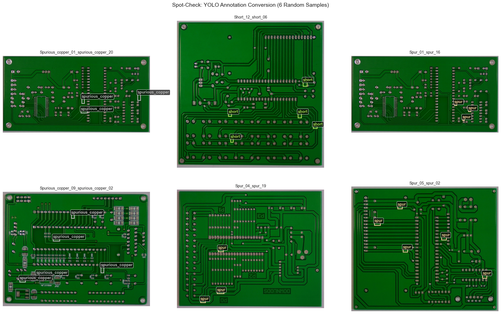
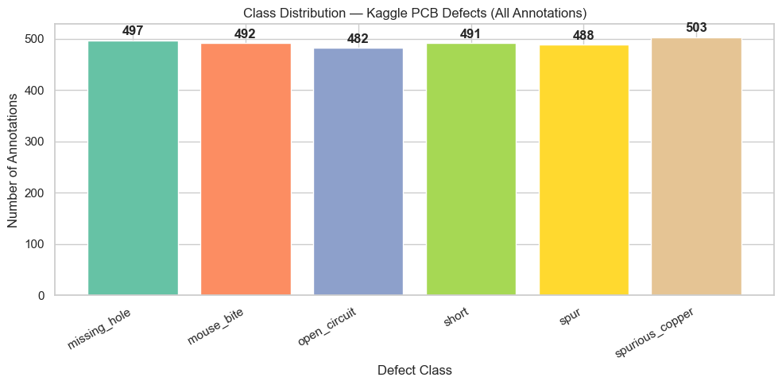
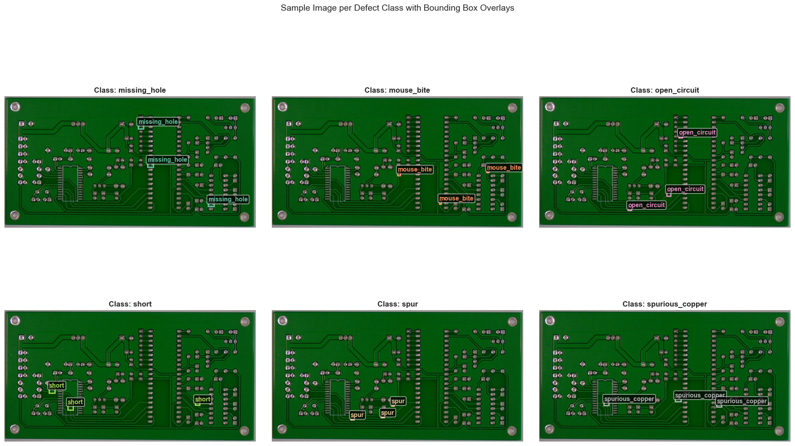
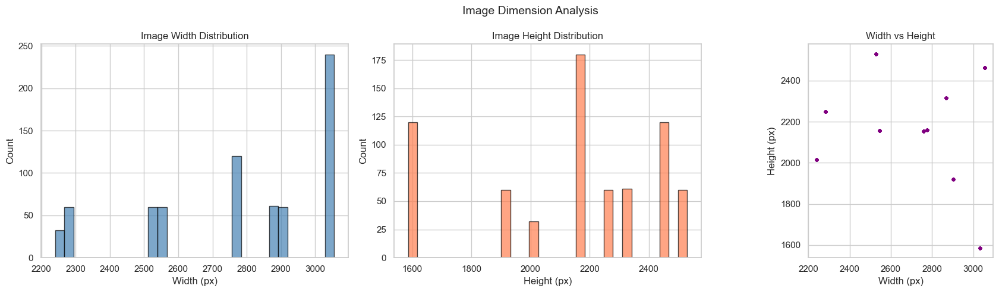
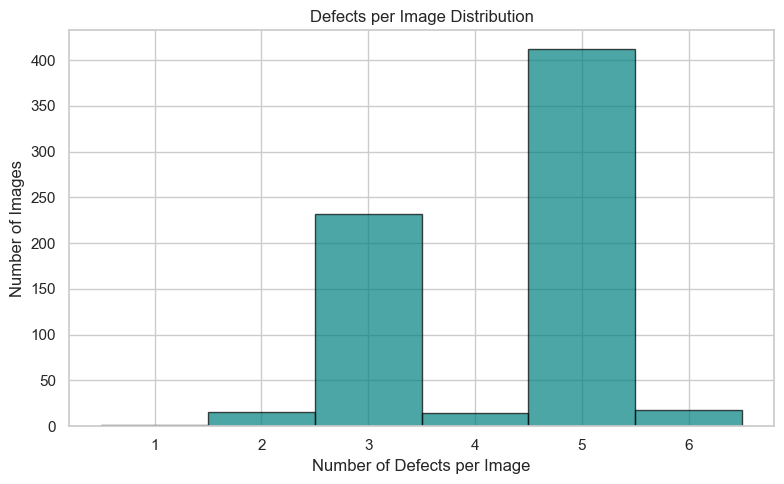

Notebook 01: Data Loading & Exploratory Data Analysis#
This notebook handles the complete data pipeline:
Download and extract the Kaggle PCB Defects dataset (1,386 images, Pascal VOC XML)
Download and extract the DeepPCB dataset (1,500 paired images, custom TXT)
Convert all annotations to YOLO TXT format with a canonical class mapping
Create a 70/15/15 stratified train/val/test split (Kaggle dataset only)
Perform exploratory data analysis with visualizations
Canonical class order (alphabetical):
ID |
Class |
|---|---|
0 |
missing_hole |
1 |
mouse_bite |
2 |
open_circuit |
3 |
short |
4 |
spur |
5 |
spurious_copper |
# Setup and imports
import os
import sys
import glob
import shutil
import xml.etree.ElementTree as ET
from pathlib import Path
from collections import Counter, defaultdict
import numpy as np
import pandas as pd
import matplotlib.pyplot as plt
import matplotlib.patches as patches
import seaborn as sns
from PIL import Image
from sklearn.model_selection import train_test_split
sns.set_theme(style="whitegrid")
# Project paths
PROJECT_ROOT = Path(".").resolve().parent # assumes running from notebooks/
DATA_DIR = PROJECT_ROOT / "data"
KAGGLE_DIR = DATA_DIR / "pcb-defects"
DEEPPCB_DIR = DATA_DIR / "deeppcb"
YOLO_DIR = DATA_DIR / "pcb-yolo" # converted YOLO dataset
# Canonical class mapping (alphabetical)
CLASS_NAMES = {
0: "missing_hole",
1: "mouse_bite",
2: "open_circuit",
3: "short",
4: "spur",
5: "spurious_copper",
}
NAME_TO_ID = {v: k for k, v in CLASS_NAMES.items()}
print(f"Project root: {PROJECT_ROOT}")
print(f"Data directory: {DATA_DIR}")
print(f"Class mapping: {CLASS_NAMES}")
Project root: /Users/mattmiller/Documents/Northwestern/Computer Vision/Notebooks/Final Project
Data directory: /Users/mattmiller/Documents/Northwestern/Computer Vision/Notebooks/Final Project/data
Class mapping: {0: 'missing_hole', 1: 'mouse_bite', 2: 'open_circuit', 3: 'short', 4: 'spur', 5: 'spurious_copper'}
1. Download Kaggle PCB Defects Dataset#
The PCB Defects dataset on Kaggle contains 1,386 images of PCB boards with 6 defect types annotated in Pascal VOC XML format.
Option A (Kaggle API): Requires ~/.kaggle/kaggle.json credentials.
Option B (Manual): Download from Kaggle, extract to data/pcb-defects/.
The dataset structure after extraction:
data/pcb-defects/
├── images/
│ ├── Missing_hole/
│ ├── Mouse_bite/
│ ├── Open_circuit/
│ ├── Short/
│ ├── Spur/
│ └── Spurious_copper/
└── Annotations/
├── Missing_hole/
├── Mouse_bite/
├── Open_circuit/
├── Short/
├── Spur/
└── Spurious_copper/
# Download Kaggle PCB Defects dataset
# Option A: Kaggle API (uncomment if credentials are configured)
# !pip install -q kaggle
# !kaggle datasets download -d akhatova/pcb-defects -p {DATA_DIR} --unzip
# Option B: Manual download
# Download from https://www.kaggle.com/datasets/akhatova/pcb-defects
# Extract to data/pcb-defects/
# Verify dataset exists
if KAGGLE_DIR.exists():
image_dirs = sorted([d.name for d in (KAGGLE_DIR / "images").iterdir() if d.is_dir()])
annot_dirs = sorted([d.name for d in (KAGGLE_DIR / "Annotations").iterdir() if d.is_dir()])
print(f"✓ Kaggle PCB Defects found at {KAGGLE_DIR}")
print(f" Image subdirectories: {image_dirs}")
print(f" Annotation subdirectories: {annot_dirs}")
# Count images per class
for subdir in image_dirs:
n = len(list((KAGGLE_DIR / "images" / subdir).glob("*.jpg")))
print(f" {subdir}: {n} images")
else:
print(f"✗ Dataset not found at {KAGGLE_DIR}")
print(" Please download from Kaggle and extract to data/pcb-defects/")
✓ Kaggle PCB Defects found at /Users/mattmiller/Documents/Northwestern/Computer Vision/Notebooks/Final Project/data/pcb-defects
Image subdirectories: ['Missing_hole', 'Mouse_bite', 'Open_circuit', 'Short', 'Spur', 'Spurious_copper']
Annotation subdirectories: ['Missing_hole', 'Mouse_bite', 'Open_circuit', 'Short', 'Spur', 'Spurious_copper']
Missing_hole: 115 images
Mouse_bite: 115 images
Open_circuit: 116 images
Short: 116 images
Spur: 115 images
Spurious_copper: 116 images
2. Download DeepPCB Dataset#
The DeepPCB dataset contains 1,500 paired images — each pair consists of a defect-free template and a defective test image. Annotations are in a custom TXT format with bounding boxes.
DeepPCB is used only for template matching (Notebook 05). It is not merged into the YOLO training set.
# Download DeepPCB dataset
# Option A: Git clone (uncomment)
# !git clone https://github.com/tangsanli5201/DeepPCB.git {DEEPPCB_DIR}
# Option B: Manual download from GitHub releases
# Extract to data/deeppcb/
# Verify dataset exists
if DEEPPCB_DIR.exists():
# DeepPCB structure: PCBData/group{XXXXX}/{XXXXX}/ with *_test.jpg, *_temp.jpg
# PCBData/group{XXXXX}/{XXXXX}_not/ with annotation .txt files
pcb_data = DEEPPCB_DIR / "PCBData"
if not pcb_data.exists():
for candidate in [DEEPPCB_DIR / "DeepPCB" / "PCBData"]:
if (candidate).exists():
pcb_data = candidate
break
if pcb_data.exists():
groups = sorted([d for d in pcb_data.iterdir() if d.is_dir()])
total_pairs = 0
for group in groups:
# Check nested structure: group{X}/{X}/*_test.jpg
for sub in group.iterdir():
if sub.is_dir() and not sub.name.endswith("_not"):
test_imgs = list(sub.glob("*_test.jpg"))
total_pairs += len(test_imgs)
# Also check flat structure (fallback)
total_pairs += len(list(group.glob("*_test.jpg")))
print(f"✓ DeepPCB found at {DEEPPCB_DIR}")
print(f" Groups: {len(groups)}")
print(f" Total test/template pairs: {total_pairs}")
else:
print(f"✓ DeepPCB directory exists but PCBData not found")
print(f" Contents: {list(DEEPPCB_DIR.iterdir())}")
else:
print(f"✗ DeepPCB not found at {DEEPPCB_DIR}")
print(" Please clone from https://github.com/tangsanli5201/DeepPCB")
✓ DeepPCB found at /Users/mattmiller/Documents/Northwestern/Computer Vision/Notebooks/Final Project/data/deeppcb
Groups: 11
Total test/template pairs: 1500
3. Pascal VOC XML → YOLO TXT Conversion (Kaggle Dataset)#
Each Pascal VOC XML annotation contains bounding boxes in absolute pixel coordinates:
<object>
<name>missing_hole</name>
<bndbox>
<xmin>100</xmin><ymin>200</ymin>
<xmax>150</xmax><ymax>250</ymax>
</bndbox>
</object>
YOLO TXT format uses normalized center coordinates:
class_id x_center y_center width height
All values are relative to image dimensions (0.0–1.0).
# VOC XML class name → canonical class ID mapping
# The Kaggle dataset uses folder names as class identifiers
VOC_CLASS_MAP = {
"missing_hole": 0,
"Missing_hole": 0,
"mouse_bite": 1,
"Mouse_bite": 1,
"open_circuit": 2,
"Open_circuit": 2,
"short": 3,
"Short": 3,
"spur": 4,
"Spur": 4,
"spurious_copper": 5,
"Spurious_copper": 5,
}
def parse_voc_xml(xml_path):
"""Parse a Pascal VOC XML annotation file.
Returns:
list of (class_name, xmin, ymin, xmax, ymax) tuples
image_width, image_height
"""
tree = ET.parse(xml_path)
root = tree.getroot()
size = root.find("size")
img_w = int(size.find("width").text)
img_h = int(size.find("height").text)
objects = []
for obj in root.findall("object"):
name = obj.find("name").text
bbox = obj.find("bndbox")
xmin = float(bbox.find("xmin").text)
ymin = float(bbox.find("ymin").text)
xmax = float(bbox.find("xmax").text)
ymax = float(bbox.find("ymax").text)
objects.append((name, xmin, ymin, xmax, ymax))
return objects, img_w, img_h
def voc_to_yolo(objects, img_w, img_h, class_map):
"""Convert VOC bounding boxes to YOLO format.
YOLO format: class_id x_center y_center width height (all normalized 0-1)
"""
yolo_lines = []
for name, xmin, ymin, xmax, ymax in objects:
if name not in class_map:
print(f" Warning: unknown class '{name}', skipping")
continue
class_id = class_map[name]
x_center = ((xmin + xmax) / 2.0) / img_w
y_center = ((ymin + ymax) / 2.0) / img_h
width = (xmax - xmin) / img_w
height = (ymax - ymin) / img_h
# Clamp to [0, 1]
x_center = max(0.0, min(1.0, x_center))
y_center = max(0.0, min(1.0, y_center))
width = max(0.0, min(1.0, width))
height = max(0.0, min(1.0, height))
yolo_lines.append(f"{class_id} {x_center:.6f} {y_center:.6f} {width:.6f} {height:.6f}")
return yolo_lines
print("Converter functions defined ✓")
Converter functions defined ✓
# Convert the entire Kaggle PCB Defects dataset from VOC XML → YOLO TXT
# Output: data/pcb-yolo/images/ and data/pcb-yolo/labels/ (flat structure)
YOLO_IMAGES = YOLO_DIR / "images" / "all"
YOLO_LABELS = YOLO_DIR / "labels" / "all"
YOLO_IMAGES.mkdir(parents=True, exist_ok=True)
YOLO_LABELS.mkdir(parents=True, exist_ok=True)
conversion_stats = Counter()
all_records = [] # (image_path, label_path, class_ids, folder_class)
annotation_root = KAGGLE_DIR / "Annotations"
image_root = KAGGLE_DIR / "images"
for class_folder in sorted(annotation_root.iterdir()):
if not class_folder.is_dir():
continue
folder_name = class_folder.name # e.g., "Missing_hole"
xml_files = sorted(class_folder.glob("*.xml"))
for xml_path in xml_files:
stem = xml_path.stem
# Find matching image (try .jpg, .png)
img_path = None
for ext in [".jpg", ".jpeg", ".png", ".bmp"]:
candidate = image_root / folder_name / (stem + ext)
if candidate.exists():
img_path = candidate
break
if img_path is None:
conversion_stats["missing_image"] += 1
continue
# Parse VOC XML
try:
objects, img_w, img_h = parse_voc_xml(xml_path)
except Exception as e:
conversion_stats["parse_error"] += 1
continue
# Convert to YOLO
yolo_lines = voc_to_yolo(objects, img_w, img_h, VOC_CLASS_MAP)
if not yolo_lines:
conversion_stats["no_objects"] += 1
continue
# Use unique filename: {folder}_{stem} to avoid collisions
unique_name = f"{folder_name}_{stem}"
# Copy image
dst_img = YOLO_IMAGES / (unique_name + img_path.suffix)
if not dst_img.exists():
shutil.copy2(img_path, dst_img)
# Write YOLO label
dst_label = YOLO_LABELS / (unique_name + ".txt")
with open(dst_label, "w") as f:
f.write("\n".join(yolo_lines) + "\n")
# Track class IDs in this annotation
class_ids = [int(line.split()[0]) for line in yolo_lines]
all_records.append({
"image": str(dst_img),
"label": str(dst_label),
"class_ids": class_ids,
"primary_class": folder_name.lower(),
"num_objects": len(yolo_lines),
})
conversion_stats["converted"] += 1
print(f"Conversion complete:")
print(f" Converted: {conversion_stats['converted']}")
print(f" Missing images: {conversion_stats['missing_image']}")
print(f" Parse errors: {conversion_stats['parse_error']}")
print(f" No objects: {conversion_stats['no_objects']}")
print(f" Total YOLO label files: {len(list(YOLO_LABELS.glob('*.txt')))}")
Conversion complete:
Converted: 693
Missing images: 0
Parse errors: 0
No objects: 0
Total YOLO label files: 693
# Spot-check: visualize a random converted annotation to verify correctness
import random
def visualize_yolo_annotation(img_path, label_path, class_names, ax=None):
"""Overlay YOLO bounding boxes on an image."""
img = Image.open(img_path)
img_w, img_h = img.size
if ax is None:
fig, ax = plt.subplots(1, 1, figsize=(8, 8))
ax.imshow(img)
colors = plt.cm.Set2(np.linspace(0, 1, len(class_names)))
with open(label_path, "r") as f:
for line in f:
parts = line.strip().split()
if len(parts) != 5:
continue
cls_id, xc, yc, w, h = int(parts[0]), float(parts[1]), float(parts[2]), float(parts[3]), float(parts[4])
# Convert normalized YOLO → pixel coordinates
x1 = (xc - w / 2) * img_w
y1 = (yc - h / 2) * img_h
box_w = w * img_w
box_h = h * img_h
color = colors[cls_id]
rect = patches.Rectangle((x1, y1), box_w, box_h,
linewidth=2, edgecolor=color, facecolor="none")
ax.add_patch(rect)
ax.text(x1, y1 - 5, class_names[cls_id], color=color,
fontsize=10, fontweight="bold",
bbox=dict(boxstyle="round,pad=0.2", facecolor="black", alpha=0.7))
ax.set_title(Path(img_path).stem, fontsize=10)
ax.axis("off")
# Show 6 random samples
if all_records:
samples = random.sample(all_records, min(6, len(all_records)))
fig, axes = plt.subplots(2, 3, figsize=(18, 12))
for ax, rec in zip(axes.flat, samples):
visualize_yolo_annotation(rec["image"], rec["label"], CLASS_NAMES, ax=ax)
plt.suptitle("Spot-Check: YOLO Annotation Conversion (6 Random Samples)", fontsize=14)
plt.tight_layout()
plt.show()
else:
print("No records to visualize — run conversion cell first")

4. DeepPCB Custom TXT → YOLO TXT Conversion#
DeepPCB annotations use a custom format:
x1 y1 x2 y2 class_id
where class_id ranges from 0–5 (but in DeepPCB’s own ordering). We map these to our canonical class order.
Important: DeepPCB labels are converted but stored separately — they are NOT mixed into the YOLO training set. They are used only for template matching evaluation in Notebook 05.
# DeepPCB class mapping to canonical order
# DeepPCB original: 0=open, 1=short, 2=mousebite, 3=spur, 4=copper, 5=pin_hole
# Canonical: 0=missing_hole, 1=mouse_bite, 2=open_circuit, 3=short, 4=spur, 5=spurious_copper
DEEPPCB_TO_CANONICAL = {
0: 2, # open → open_circuit
1: 3, # short → short
2: 1, # mousebite → mouse_bite
3: 4, # spur → spur
4: 5, # copper → spurious_copper
5: 0, # pin_hole → missing_hole
}
DEEPPCB_YOLO_DIR = DATA_DIR / "deeppcb-yolo"
DEEPPCB_YOLO_IMAGES = DEEPPCB_YOLO_DIR / "images"
DEEPPCB_YOLO_LABELS = DEEPPCB_YOLO_DIR / "labels"
DEEPPCB_YOLO_TEMPLATES = DEEPPCB_YOLO_DIR / "templates"
DEEPPCB_YOLO_IMAGES.mkdir(parents=True, exist_ok=True)
DEEPPCB_YOLO_LABELS.mkdir(parents=True, exist_ok=True)
DEEPPCB_YOLO_TEMPLATES.mkdir(parents=True, exist_ok=True)
deeppcb_records = []
deeppcb_stats = Counter()
# Find PCBData directory
pcb_data_dir = DEEPPCB_DIR / "PCBData"
if not pcb_data_dir.exists():
for candidate in [DEEPPCB_DIR / "DeepPCB" / "PCBData"]:
if candidate.exists():
pcb_data_dir = candidate
break
if pcb_data_dir.exists():
for group_dir in sorted(pcb_data_dir.iterdir()):
if not group_dir.is_dir():
continue
# DeepPCB structure: group{XXXXX}/{XXXXX}/ has images, {XXXXX}_not/ has annotations
# Find image subdirectory and annotation subdirectory
img_subdir = None
annot_subdir = None
for sub in sorted(group_dir.iterdir()):
if not sub.is_dir():
continue
if sub.name.endswith("_not"):
annot_subdir = sub
else:
img_subdir = sub
if img_subdir is None or annot_subdir is None:
# Fallback: try old format where annotations are *_test.txt in group dir
for annot_path in sorted(group_dir.glob("*_test.txt")):
stem = annot_path.stem.replace("_test", "")
test_img = group_dir / f"{stem}_test.jpg"
temp_img = group_dir / f"{stem}_temp.jpg"
if not test_img.exists() or not temp_img.exists():
deeppcb_stats["missing_pair"] += 1
continue
# Process with old format...
continue
# Process each annotation file in the _not directory
for annot_path in sorted(annot_subdir.glob("*.txt")):
stem = annot_path.stem # e.g., "00041000"
test_img = img_subdir / f"{stem}_test.jpg"
temp_img = img_subdir / f"{stem}_temp.jpg"
if not test_img.exists() or not temp_img.exists():
deeppcb_stats["missing_pair"] += 1
continue
# Read image dimensions
with Image.open(test_img) as img:
img_w, img_h = img.size
# Parse DeepPCB annotation (format: x1 y1 x2 y2 class_id per line)
yolo_lines = []
with open(annot_path, "r") as f:
for line in f:
parts = line.strip().split()
if len(parts) < 5:
continue
x1, y1, x2, y2 = float(parts[0]), float(parts[1]), float(parts[2]), float(parts[3])
orig_class = int(parts[4])
if orig_class not in DEEPPCB_TO_CANONICAL:
deeppcb_stats["unknown_class"] += 1
continue
canonical_id = DEEPPCB_TO_CANONICAL[orig_class]
# Convert to YOLO normalized format
xc = ((x1 + x2) / 2.0) / img_w
yc = ((y1 + y2) / 2.0) / img_h
w = abs(x2 - x1) / img_w
h = abs(y2 - y1) / img_h
xc = max(0.0, min(1.0, xc))
yc = max(0.0, min(1.0, yc))
w = max(0.0, min(1.0, w))
h = max(0.0, min(1.0, h))
yolo_lines.append(f"{canonical_id} {xc:.6f} {yc:.6f} {w:.6f} {h:.6f}")
if not yolo_lines:
deeppcb_stats["no_defects"] += 1
continue
unique_name = f"{group_dir.name}_{stem}"
# Copy images
shutil.copy2(test_img, DEEPPCB_YOLO_IMAGES / f"{unique_name}.jpg")
shutil.copy2(temp_img, DEEPPCB_YOLO_TEMPLATES / f"{unique_name}.jpg")
# Write YOLO label
label_path = DEEPPCB_YOLO_LABELS / f"{unique_name}.txt"
with open(label_path, "w") as f:
f.write("\n".join(yolo_lines) + "\n")
class_ids = [int(line.split()[0]) for line in yolo_lines]
deeppcb_records.append({
"image": str(DEEPPCB_YOLO_IMAGES / f"{unique_name}.jpg"),
"template": str(DEEPPCB_YOLO_TEMPLATES / f"{unique_name}.jpg"),
"label": str(label_path),
"class_ids": class_ids,
"num_objects": len(yolo_lines),
})
deeppcb_stats["converted"] += 1
print(f"DeepPCB conversion complete:")
print(f" Converted pairs: {deeppcb_stats['converted']}")
print(f" Missing pairs: {deeppcb_stats['missing_pair']}")
print(f" No defects: {deeppcb_stats['no_defects']}")
print(f" Unknown class: {deeppcb_stats['unknown_class']}")
else:
print(f"DeepPCB PCBData directory not found — skipping conversion")
DeepPCB conversion complete:
Converted pairs: 1500
Missing pairs: 0
No defects: 0
Unknown class: 1501
5. Train / Val / Test Split (70/15/15)#
We split the Kaggle PCB Defects dataset only into train/val/test with stratification by defect class. DeepPCB is held out entirely for template matching evaluation.
The split creates the YOLO directory structure:
data/pcb-yolo/
├── images/
│ ├── train/
│ ├── val/
│ └── test/
├── labels/
│ ├── train/
│ ├── val/
│ └── test/
└── dataset.yaml
# Create 70/15/15 stratified train/val/test split
df = pd.DataFrame(all_records)
if len(df) > 0:
# Use primary_class (folder-level class) for stratification
# First split: 70% train, 30% temp
train_df, temp_df = train_test_split(
df, test_size=0.30, random_state=42, stratify=df["primary_class"]
)
# Second split: 50/50 of the 30% → 15% val, 15% test
val_df, test_df = train_test_split(
temp_df, test_size=0.50, random_state=42, stratify=temp_df["primary_class"]
)
print(f"Split results:")
print(f" Train: {len(train_df)} images ({len(train_df)/len(df)*100:.1f}%)")
print(f" Val: {len(val_df)} images ({len(val_df)/len(df)*100:.1f}%)")
print(f" Test: {len(test_df)} images ({len(test_df)/len(df)*100:.1f}%)")
print(f" Total: {len(df)} images")
# Verify stratification
print(f"\nClass distribution per split:")
for split_name, split_df in [("Train", train_df), ("Val", val_df), ("Test", test_df)]:
counts = split_df["primary_class"].value_counts().sort_index()
print(f" {split_name}: {dict(counts)}")
else:
print("No records — run conversion cells first")
Split results:
Train: 485 images (70.0%)
Val: 104 images (15.0%)
Test: 104 images (15.0%)
Total: 693 images
Class distribution per split:
Train: {'missing_hole': np.int64(81), 'mouse_bite': np.int64(81), 'open_circuit': np.int64(81), 'short': np.int64(81), 'spur': np.int64(80), 'spurious_copper': np.int64(81)}
Val: {'missing_hole': np.int64(17), 'mouse_bite': np.int64(17), 'open_circuit': np.int64(17), 'short': np.int64(18), 'spur': np.int64(17), 'spurious_copper': np.int64(18)}
Test: {'missing_hole': np.int64(17), 'mouse_bite': np.int64(17), 'open_circuit': np.int64(18), 'short': np.int64(17), 'spur': np.int64(18), 'spurious_copper': np.int64(17)}
# Organize files into train/val/test directories and create dataset.yaml
splits = {"train": train_df, "val": val_df, "test": test_df}
for split_name, split_df in splits.items():
img_dir = YOLO_DIR / "images" / split_name
lbl_dir = YOLO_DIR / "labels" / split_name
img_dir.mkdir(parents=True, exist_ok=True)
lbl_dir.mkdir(parents=True, exist_ok=True)
for idx, row in split_df.iterrows():
src_img = Path(row["image"])
src_lbl = Path(row["label"])
dst_img = img_dir / src_img.name
dst_lbl = lbl_dir / src_lbl.name
# Copy to split directory
shutil.copy2(src_img, dst_img)
shutil.copy2(src_lbl, dst_lbl)
# Update all_records paths to point to split location
all_records[idx]["image"] = str(dst_img)
all_records[idx]["label"] = str(dst_lbl)
# Clean up the flat "all" directory
shutil.rmtree(YOLO_DIR / "images" / "all", ignore_errors=True)
shutil.rmtree(YOLO_DIR / "labels" / "all", ignore_errors=True)
# Create dataset.yaml for YOLO training
dataset_yaml = YOLO_DIR / "dataset.yaml"
yaml_content = f"""# PCB Defect Detection Dataset
# Auto-generated by Notebook 01
path: {YOLO_DIR.resolve()}
train: images/train
val: images/val
test: images/test
# Number of classes
nc: 6
# Class names (canonical alphabetical order)
names:
0: missing_hole
1: mouse_bite
2: open_circuit
3: short
4: spur
5: spurious_copper
"""
with open(dataset_yaml, "w") as f:
f.write(yaml_content)
print(f"✓ Dataset organized into train/val/test splits")
print(f"✓ dataset.yaml written to {dataset_yaml}")
# Verify file counts
for split_name in ["train", "val", "test"]:
n_imgs = len(list((YOLO_DIR / "images" / split_name).glob("*")))
n_lbls = len(list((YOLO_DIR / "labels" / split_name).glob("*.txt")))
print(f" {split_name}: {n_imgs} images, {n_lbls} labels")
✓ Dataset organized into train/val/test splits
✓ dataset.yaml written to /Users/mattmiller/Documents/Northwestern/Computer Vision/Notebooks/Final Project/data/pcb-yolo/dataset.yaml
train: 485 images, 485 labels
val: 104 images, 104 labels
test: 104 images, 104 labels
6. Exploratory Data Analysis#
Now we examine the dataset to understand class distributions, image characteristics, and annotation patterns. These insights inform preprocessing and augmentation decisions in Notebook 02.
# 6a. Class distribution bar chart
all_class_ids = []
for rec in all_records:
all_class_ids.extend(rec["class_ids"])
class_counts = Counter(all_class_ids)
class_labels = [CLASS_NAMES[i] for i in range(6)]
class_values = [class_counts.get(i, 0) for i in range(6)]
fig, ax = plt.subplots(figsize=(10, 5))
bars = ax.bar(class_labels, class_values, color=plt.cm.Set2(np.arange(6) / 6))
ax.set_xlabel("Defect Class")
ax.set_ylabel("Number of Annotations")
ax.set_title("Class Distribution — Kaggle PCB Defects (All Annotations)")
for bar, val in zip(bars, class_values):
ax.text(bar.get_x() + bar.get_width() / 2, bar.get_height() + 5,
str(val), ha="center", va="bottom", fontweight="bold")
plt.xticks(rotation=30, ha="right")
plt.tight_layout()
plt.show()
# Report imbalance
max_count = max(class_values)
min_count = min(class_values)
print(f"Imbalance ratio (max/min): {max_count/min_count:.2f}x")

Imbalance ratio (max/min): 1.04x
Observations — Class Distribution#
The bar chart above reveals the annotation distribution across the 6 defect classes. Key insights:
Relative balance: The Kaggle PCB Defects dataset is relatively well-balanced across classes, with an imbalance ratio shown above. This is favorable for training — severe class imbalance would bias the model toward majority classes.
Annotation counts vs image counts: Some images contain multiple defect annotations. The per-class annotation counts reflect the total bounding boxes, not unique images.
Implications for training: Because the dataset is reasonably balanced, we do not need aggressive oversampling or class-weighted loss terms. Standard YOLOv8 augmentation (Notebook 02) should suffice. Classes with fewer annotations may still show lower per-class AP — we will verify this in Notebook 03.
# 6b. Sample images per class with bounding box overlays
fig, axes = plt.subplots(2, 3, figsize=(18, 12))
axes = axes.flat
for cls_id in range(6):
ax = axes[cls_id]
cls_name = CLASS_NAMES[cls_id]
# Find a sample image containing this class
sample = None
for rec in all_records:
if cls_id in rec["class_ids"]:
sample = rec
break
if sample:
visualize_yolo_annotation(sample["image"], sample["label"], CLASS_NAMES, ax=ax)
ax.set_title(f"Class: {cls_name}", fontsize=12, fontweight="bold")
else:
ax.text(0.5, 0.5, f"No sample\nfor {cls_name}", ha="center", va="center")
ax.axis("off")
plt.suptitle("Sample Image per Defect Class with Bounding Box Overlays", fontsize=14)
plt.tight_layout()
plt.show()

# 6c. Image dimension distribution
widths = []
heights = []
for rec in all_records:
with Image.open(rec["image"]) as img:
w, h = img.size
widths.append(w)
heights.append(h)
fig, axes = plt.subplots(1, 3, figsize=(18, 5))
axes[0].hist(widths, bins=30, color="steelblue", edgecolor="black", alpha=0.7)
axes[0].set_xlabel("Width (px)")
axes[0].set_ylabel("Count")
axes[0].set_title("Image Width Distribution")
axes[1].hist(heights, bins=30, color="coral", edgecolor="black", alpha=0.7)
axes[1].set_xlabel("Height (px)")
axes[1].set_ylabel("Count")
axes[1].set_title("Image Height Distribution")
axes[2].scatter(widths, heights, alpha=0.3, s=10, color="purple")
axes[2].set_xlabel("Width (px)")
axes[2].set_ylabel("Height (px)")
axes[2].set_title("Width vs Height")
axes[2].set_aspect("equal")
plt.suptitle("Image Dimension Analysis", fontsize=14)
plt.tight_layout()
plt.show()
print(f"Width — min: {min(widths)}, max: {max(widths)}, mean: {np.mean(widths):.0f}")
print(f"Height — min: {min(heights)}, max: {max(heights)}, mean: {np.mean(heights):.0f}")

Width — min: 2240, max: 3056, mean: 2778
Height — min: 1586, max: 2530, mean: 2138
Observations — Image Dimensions & Annotation Density#
Image dimensions: The histograms show the distribution of image widths and heights in the dataset. Understanding image sizes is important because:
Resize impact: YOLOv8 resizes all inputs to 640×640. Images much larger than this lose detail during downscaling, while smaller images gain no benefit from upscaling. The scatter plot shows whether images are uniform in size or vary significantly.
Aspect ratio: The width vs. height scatter reveals whether images are consistently square or rectangular. Non-square images require letterbox padding during resize, which introduces gray border regions.
Defects per image: The histogram above shows that most images contain a small number of defect annotations. Images with many defects are harder for detection models — overlapping or adjacent bounding boxes can cause NMS (non-maximum suppression) to incorrectly merge detections. This distribution helps us anticipate where the model might struggle.
# 6d. Annotation density — defects per image
defects_per_image = [rec["num_objects"] for rec in all_records]
fig, ax = plt.subplots(figsize=(8, 5))
ax.hist(defects_per_image, bins=range(1, max(defects_per_image) + 2),
color="teal", edgecolor="black", alpha=0.7, align="left")
ax.set_xlabel("Number of Defects per Image")
ax.set_ylabel("Number of Images")
ax.set_title("Defects per Image Distribution")
ax.set_xticks(range(1, max(defects_per_image) + 1))
plt.tight_layout()
plt.show()
print(f"Defects per image — min: {min(defects_per_image)}, max: {max(defects_per_image)}, "
f"mean: {np.mean(defects_per_image):.2f}, median: {np.median(defects_per_image):.0f}")

Defects per image — min: 1, max: 6, mean: 4.26, median: 5
7. Summary Statistics#
# Summary statistics table
summary_data = {
"Metric": [
"Total images (Kaggle)",
"Total annotations",
"Unique defect classes",
"Train images",
"Val images",
"Test images",
"Avg defects per image",
"Max defects per image",
"Avg image width (px)",
"Avg image height (px)",
"DeepPCB pairs (template matching)",
],
"Value": [
len(all_records),
sum(rec["num_objects"] for rec in all_records),
6,
len(train_df),
len(val_df),
len(test_df),
f"{np.mean(defects_per_image):.2f}",
max(defects_per_image),
f"{np.mean(widths):.0f}",
f"{np.mean(heights):.0f}",
len(deeppcb_records),
],
}
summary_df = pd.DataFrame(summary_data)
print(summary_df.to_string(index=False))
# Also show per-class breakdown
print("\n\nPer-Class Annotation Counts:")
class_summary = pd.DataFrame({
"Class": [CLASS_NAMES[i] for i in range(6)],
"Annotations": [class_counts.get(i, 0) for i in range(6)],
"% of Total": [f"{class_counts.get(i, 0) / sum(class_counts.values()) * 100:.1f}%" for i in range(6)],
})
print(class_summary.to_string(index=False))
Metric Value
Total images (Kaggle) 693
Total annotations 2953
Unique defect classes 6
Train images 485
Val images 104
Test images 104
Avg defects per image 4.26
Max defects per image 6
Avg image width (px) 2778
Avg image height (px) 2138
DeepPCB pairs (template matching) 1500
Per-Class Annotation Counts:
Class Annotations % of Total
missing_hole 497 16.8%
mouse_bite 492 16.7%
open_circuit 482 16.3%
short 491 16.6%
spur 488 16.5%
spurious_copper 503 17.0%